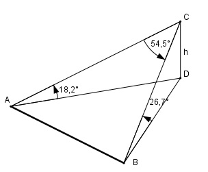

>Aufgabe 196 Von einem Aussichtspunkt aus sieht man 500 m einer waagerechtenStraße unter einem Sehwinkel von 54,5°. Die Endpunkte sieht man unter den Tiefenwinkeln 26,7° und 18,2°. Berechnen Sie die Höhe h, die der Aussichtspunkt über den Endpunkten liegt.

Im Dreieck ADC: h sin 18,2° = ---- |*AC AC AC * sin 18,2° = h | :sin 18,2° h h AC = ----------- = --------- = 3,2 * h sin 18,2° 0,3123 Im Dreieck BDC: h sin 26,7° = ---- |*BC BC BC * sin 26,7° = h |:sin 26,7° h h BC = ----------- = --------- = 2,2 * h sin 26,7° 0,4493 Im Dreieck ABC: Fall SWS: Cosinussatz: AB2 = AC2 + BC2 - 2 * AC * BC * cos 54,5° 5002 = (3,2 * h)2 + (2,2 * h)2 - - 2 * 3,2 * h * 2,2 * h * 0,5807 250 000 = 10,24h2 + 4,84h2 - 8,2h2 250 000 = 6,9h2 | :6,9 h2 = 36 231,9 |√ h = 190,3 m